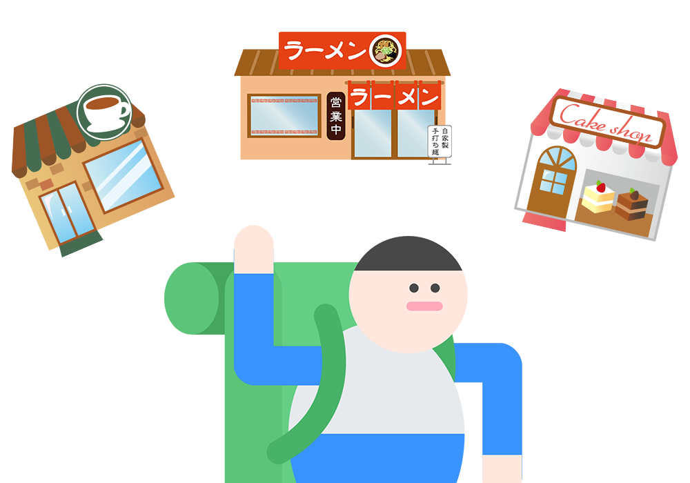
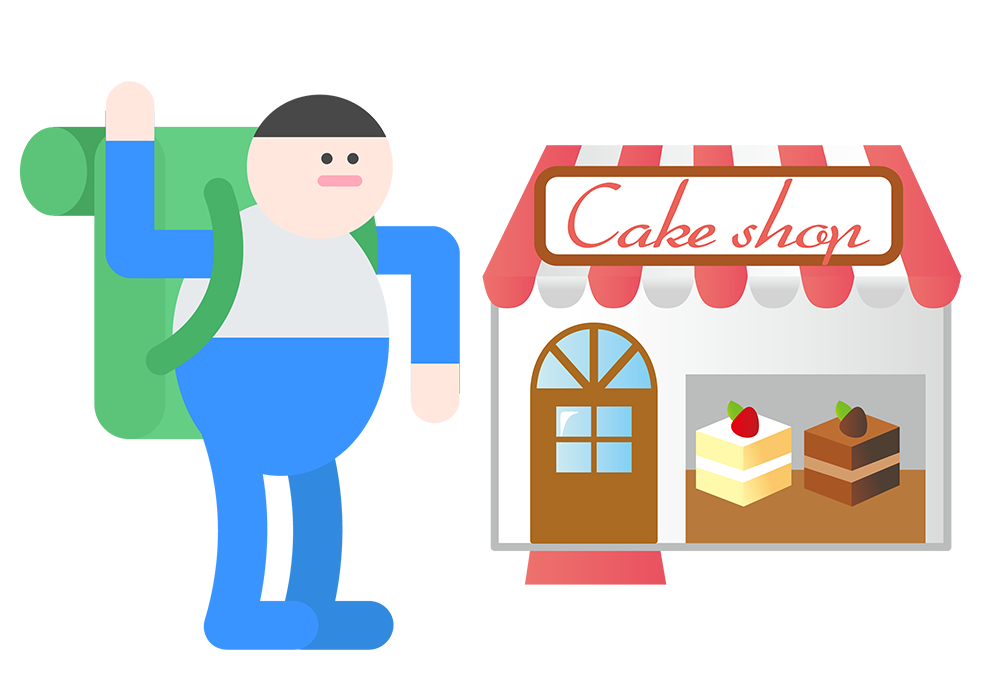

記事を投稿する
シゴトを通じて、記事執筆スキルを高めよう。
シゴトとは？
旅先へ行き、その感想記事を書いて投稿、掲載するまでの流れをシゴトといいます。
実際のシゴトを通じて、記事執筆について学んでみましょう。
シゴトの流れ
STEP1: 旅先を決めよう

まずは旅先を決めましょう。
行きたい旅先を見つけたら、旅先の場所とシゴト内容を確認しておきましょう。
STEP2: 旅先にいこう

旅先へ行きましょう。
記事を書く際に必要な写真を撮影したり、感想をメモしておくのも忘れずに。
STEP3: 記事を書く
早速記事を書いてみましょう。
初めての人は、GOGYOZANで他の人が書いた記事などを参考にして書いてみましょう。
STEP4: 記事を送信する
書いた記事をGOGYOZANに送信しましょう。
記事は投稿専用のメールフォームから投稿できます。
STEP5: アドバイスを元に修正する
GOGYOZANから記事に対するアドバイスや修正事項がメールに送られてきます。
それに合わせて記事を修正して、再び記事を送信しましょう。
修正箇所が無くなり、掲載できる記事となるまで繰り返します。
STEP6: 記事の掲載開始
掲載できる記事になると記事の掲載が始まります。
記事の掲載が始まるとSAGOJOのアカウントに旅人EXPが送られます。
記事を公開して旅人レベルを上げていきましょう！